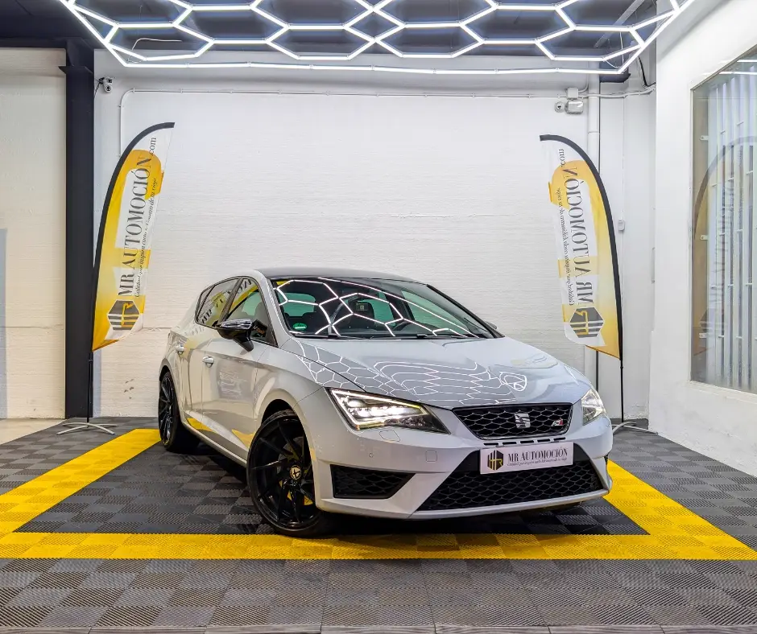

1 / 24Pura adrenalina y prestaciones. Ponemos a la venta este espectacular SEAT León Cupra 280 , matriculado en mayo de 2014 . Se trata de la versión de 280 CV , propulsada por el aclamado motor 2.0 TSI (CJXA) y gestionada por la rapidísima caja de cambios automática DSG de 6 velocidades con levas en el volante.
Esta unidad cuenta con 183.800 km y destaca por su estética agresiva y exclusiva. Viste el color especial Gris Dinámico (un tono sólido exclusivo de Cupra) y ha sido mejorado con un kit aerodinámico Maxton Design (splitter delantero y difusor), totalmente HOMOLOGADO, que realza su deportividad.
El interior combina deportividad y confort con sus asientos de Alcantara calefactables y el sistema de audio de alta fidelidad. Esta unidad viene cargada con lo mejor de la gama y mejoras estéticas: Rendimiento y Dinámica Motor 2.0 TSI 280 CV: Prestaciones de infarto (0-100 km/h en 5,7s). Cambio DSG con Levas: Cambio de doble embrague rápido y preciso.
DCC (Control Dinámico de Chasis): Suspensión adaptativa regulable (Confort, Sport, Cupra). Diferencial Autoblocante VAQ: Mecánico con control electrónico (imprescindible para traccionar los 280 CV). Cupra Drive Profile: Selector de modos de conducción que ajusta motor, cambio, dirección y sonido.
Sistema Start/Stop: Parada y arranque automático para mayor eficiencia (desconectable). Estética Exterior Kit Maxton Design: Splitter delantero y añadidos en el difusor trasero en negro brillo. Llantas de 19 Pulgadas: Diseño "Performance" en negro brillante con pinzas de freno rojas con logo Cupra.
Color Gris Dinámico: Un gris muy claro, casi blanco, exclusivo de esta versión (LS7J). Faros Full LED: Iluminación delantera y trasera LED. Interior y Tecnología SEAT Sound System: Equipo de audio premium con 10 altavoces y subwoofer en el maletero (se ve el logo en la puerta). Asientos Deportivos Cupra: Tapicería mixta en Alcantara y piel con laterales en blanco y logo Cupra en el respaldo.
Asientos Calefactables: Confort térmico para conductor y acompañante. Navegador: Pantalla táctil a color con sistema de navegación e infoentretenimiento. Sensores de Aparcamiento: Delanteros y traseros con visualización en pantalla (OPS). Confort Climatizador Bizona Digital. Control de Velocidad de Crucero.
Espejos retrovisores plegables eléctricamente y calefactables. Iluminación ambiental en las puertas (LED variable rojo/blanco según modo de conducción). Tu Compra Segura con MR Automoción En MR Automoción la transparencia es nuestra prioridad: ✅ Motor Cupra 280 : La versión "pata negra" con 206 kW (280 CV) en ficha técnica. ✅ Mantenimiento al día : ITV vigente hasta agosto de 2025. ✅ Garantía Completa de 1 Año : Disfruta de la potencia con tranquilidad. ✅ Transferencia incluida en el precio. ✅ Kilometraje verificado . ✅ DISPONEMOS DE OPCIONES DE FINANCIACIÓN PARA TODOS NUESTROS VEHÍCULOS
| Marca | SEAT |
|---|---|
| Modelo | SEAT León CUPRA 2.0 TSI 280cv DSG6 StSp |
| Año | May 2014 |
| Kilómetros | 183.800 km |
| Combustible | Gasolina |
| Cambio | Automático |
| Potencia | 280 CV |
| Garantía | 1 Año |
| IVA | NO DEDUCIBLE |
Quizá también te encaje